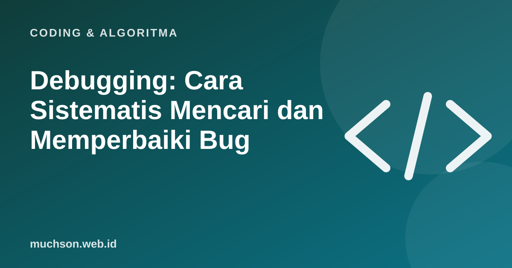

Beranda › Artikel › Coding & Algoritma
Coding & AlgoritmaDebugging: Cara Sistematis Mencari dan Memperbaiki Bug
Programmer berpengalaman tidak selalu lebih pintar menulis kode tanpa bug. Mereka lebih pandai mencarinya. Debugging adalah keterampilan yang bisa dipelajari, dengan metode yang hampir sama dengan ilmuwan: hipotesis, eksperimen, kesimpulan.

Siklus debugging
Langkah praktisnya
- Reproduksi. Temukan langkah pasti yang memunculkan bug. Bug yang tidak bisa direproduksi tidak bisa dipastikan sudah diperbaiki.
- Baca pesan error. Biasanya menyebut jenis masalah, file, dan baris. Baca dari bawah ke atas untuk melihat sumbernya.
- Persempit. Matikan bagian kode atau bagi dua area yang dicurigai, lalu lihat apakah bug tetap muncul.
- Periksa asumsi. Cetak nilai variabel di titik kunci. Apakah isinya sesuai bayangan Anda?
- Ubah satu hal sekaligus. Bila mengubah banyak, Anda tidak tahu yang mana yang berhasil.
- Verifikasi dan tambahkan tes. Pastikan bug hilang dan tidak kembali.
Alat bantu
Cara bertanya
Saat meminta bantuan (kepada rekan atau AI), sertakan: apa yang diharapkan, apa yang terjadi, pesan error lengkap, dan potongan kode terkecil yang masih memunculkan bug. Pertanyaan yang baik sering menjawab separuh masalah.
Tanya jawab
Apakah AI bisa membantu debugging?
Sangat bisa untuk menjelaskan error dan mengusulkan penyebab. Tetap uji usulannya dan pahami alasannya.
Bagaimana menghadapi bug yang muncul sesekali?
Tambahkan logging, cari pola (waktu, data tertentu, urutan), dan coba reproduksi dengan data yang sama.
Apa itu breakpoint?
Titik tempat program berhenti sehingga Anda bisa memeriksa nilai variabel dan menjalankan baris demi baris.